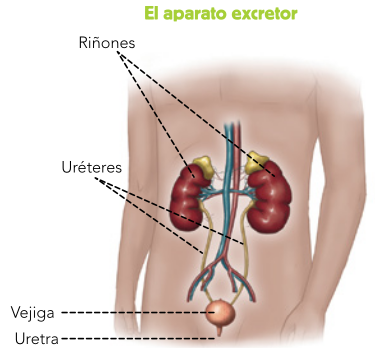

El aparato excretor (Figura ![[*]](crossref.png) ) lo forman los riñones y las vías urinarias.
) lo forman los riñones y las vías urinarias.
- Los riñones. Son dos órganos con forma de judía, situados en la zona lumbar. Contienen miles de finísimos tubos en los que se limpia la sangre de las sustancias de desecho y se forma la orina.
- Las vías urinarias. Son los conductos por los que la orina circula, se almacena y se expulsa al exterior. Son los uréteres, la vejiga urinaria y la uretra.
Figura:
Aparato excretor
|

|